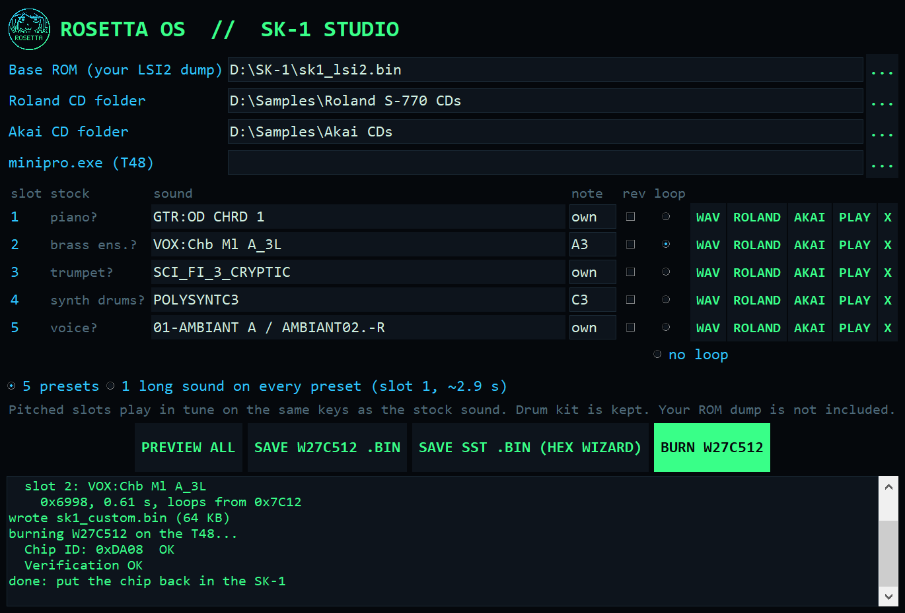
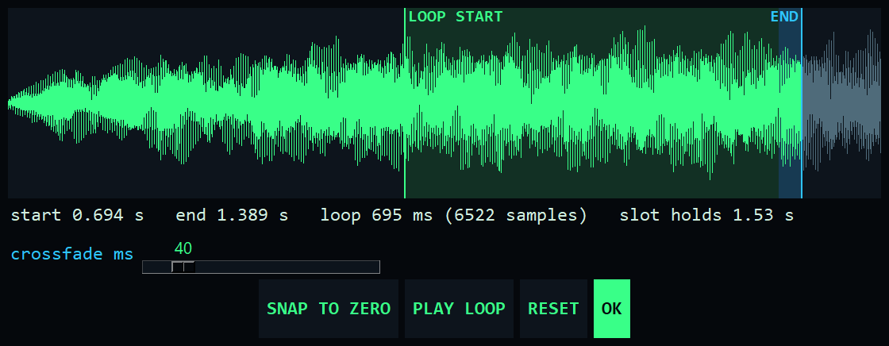

Casio SK-1 Mod: your own sounds in the preset ROM
Swap the preset ROM of the Casio SK-1 (SK1, also sold as the Realistic Concertmate-500) for an EEPROM and fill it with your own sounds. Free, open source, and tested on a real SK-1.
ROSETTA OS // SK-1 STUDIO
Works on a real SK-1
Drop-in EEPROMA Winbond W27C512 goes in the preset ROM's socket. No other changes to the board.
Your own presetsThe 5 sampled presets replaced: an overdrive guitar chord, a Mellotron choir, a Chamberlin voice, a poly synth and a sci-fi FX.
3-second soundsOne sound can fill the whole ROM: 3.2 s, against 0.4 to 0.9 s for the stock presets.
Custom loop pointsHold a key and the sound sustains on a custom loop instead of stopping.
Stock in one swapPut the original chip back and it's a stock SK-1 again.
SK-1 Studio
A Windows app that builds the ROM for you. Load a sound into each of the 5 preset slots, hear it the way the SK-1 will play it, and burn the chip.

- In tune on the keys: type the sample's note and it lands on the same keys as the stock sound it replaces.
- Reverse any slot, or put one long sound on every preset.
- Preview at the SK-1's own 8-bit, 9.4 kHz before burning.
- Burn straight to an XGecu T48, or save the image for any programmer.
- The stock drum kit stays in the ROM for the auto-rhythms.

How it works
- Desolder the preset ROM (LSI2, NEC D23C256EAC-011) and fit a 28-pin socket.
- Read your own chip on a programmer such as a T48 and keep it.
- Build your sounds in SK-1 Studio on top of that dump and burn a W27C512.
- Fit the W27C512 and play.
The SK-1's own sampler stays as it is (1.4 s at 9.4 kHz). The mod adds custom samples in the preset ROM. For longer self-recorded samples there are notes on a clock mod.
Community
Questions, hardware reports and ideas: join the Discord. More Rosetta OS mods: Roland D-110, SP-808, Akai S2000, GP-16, U-110.